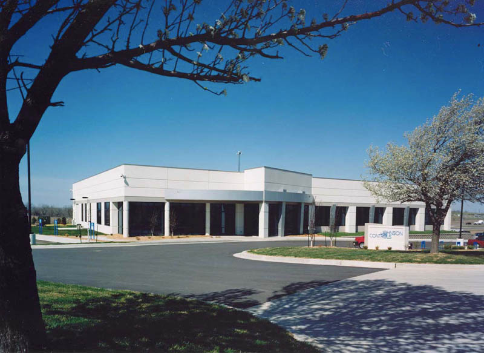

<div class="content">
 <div id="largeLeft">
  <h1>
   build-to-suit solutions
  </h1>
  <p>Many companies want a building that fits their specific needs and find it difficult to match that with existing commercial real estate inventory.</p>
  <p>On the other hand, they prefer not to own their own building. For them, Meyer Brothers Build-To-Suit option could be the right answer.</p>
  <p>This is an approach in which we build your building totally to your specifications and then we lease it back to you.</p>
  <p>Meyer Brother's Building Company has developed more than $50 million in Build-To-Suit lease back properties.</p>
  <p>We have an investment group in place that allows companies the opportunity to get their own custom-designed facility without having to own it.</p>
  <a href="../Images/projects/Johnson-Controls/Johnson-Controls-Regional-Office.jpg">
    
  </a>
 </div>
</div>
